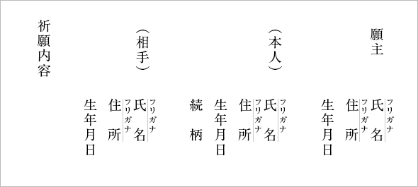

ご祈祷について
ご祈祷について
悪縁切り、良縁祈願をはじめ病気平癒、厄除けなど様々な御祈祷を受け付けております。
行事等によりお受けできない日もございますので、ご希望の方はお電話にてご予約をお願いいたします。
※まずはお電話にてご予約下さい
遠方等により御来社できない方につきましては、郵送での祈祷も受け付けております。
名前・住所・生年月日・御祈願の内容をご記入の上、上記の祈祷料とともに現金書留にてご郵送ください。
また名前・住所には必ずフリガナの記入をお願いいたします。
なお願主（願われる方）とご本人が異なる場合（親御さんがお子さまの御祈願をされる場合など）は
それぞれの名前・住所・生年月日・願主から見たご本人の続柄をご記入下さい。
また縁切り祈祷等、相手がいらっしゃる場合はその方の名前・住所・生年月日も分かる範囲で結構ですのでご記入ください
後日願主様あてに御祈祷いたしましたお守り等をお送りいたします。
郵送先が異なる場合などは必ずその旨を明記願います。
またそのほか詳細等につきましては社務所までお問い合わせください。
※郵送での祈祷の際は、予約の必要はございません。
